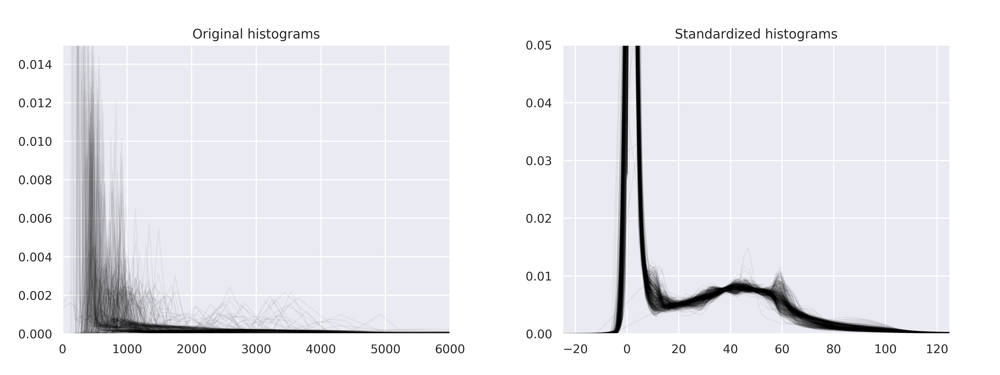

Preprocessing¶
Intensity¶
NormalizationTransform¶
-
class
torchio.transforms.preprocessing.intensity.NormalizationTransform(masking_method: Union[str, Callable[torch.Tensor, torch.Tensor], None] = None)[source]¶ Bases:
torchio.transforms.transform.TransformBase class for intensity preprocessing transforms.
Parameters: masking_method – Defines the mask used to compute the normalization statistics. It can be one of:
None: the mask image is all ones, i.e. all values in the image are used- A string: the mask image is retrieved from the sample, which is expected the string as a key
- A function: the mask image is computed as a function of the intensity image. The function must receive and return a
torch.Tensor
Example
>>> from torchio.datasets import IXITiny >>> from torchio.transforms import ZNormalization >>> dataset = IXITiny('ixi_root', download=True) >>> sample = dataset[0] >>> sample.keys() # image is the MRI, label is a brain segmentation dict_keys(['image', 'label']) >>> transform = ZNormalization() # ZNormalization is a subclass of NormalizationTransform >>> transformed = transform(sample) # use all values to compute mean and std >>> transform = ZNormalization(masking_method='label') >>> transformed = transform(sample) # use only values within the brain >>> transform = ZNormalization(masking_method=lambda x: x > x.mean()) >>> transformed = transform(sample) # use values above the image mean
RescaleIntensity¶
-
class
torchio.transforms.RescaleIntensity(out_min_max: Tuple[float, float], percentiles: Tuple[int, int] = (0, 100), masking_method: Union[str, Callable[torch.Tensor, torch.Tensor], None] = None)[source]¶ Bases:
torchio.transforms.preprocessing.intensity.normalization_transform.NormalizationTransformRescale intensity values to a certain range.
Parameters: - out_min_max – Range \((n_{min}, n_{max})\) of output intensities.
- percentiles – Percentile values of the input image that will be mapped
to \((n_{min}, n_{max})\). They can be used for contrast
stretching, as in this scikit-image example. For example,
Isensee et al. use
(0.05, 99.5)in their nn-UNet paper. - masking_method – See
NormalizationTransform.
ZNormalization¶
-
class
torchio.transforms.ZNormalization(masking_method: Union[str, Callable[torch.Tensor, torch.Tensor], None] = None)[source]¶ Bases:
torchio.transforms.preprocessing.intensity.normalization_transform.NormalizationTransformSubtract mean and divide by standard deviation.
Parameters: masking_method – See NormalizationTransform.
HistogramStandardization¶
Implementation of New variants of a method of MRI scale standardization, adapted from NiftyNet.
-
class
torchio.transforms.HistogramStandardization(landmarks_dict: Dict[str, numpy.ndarray], masking_method: Union[str, Callable[torch.Tensor, torch.Tensor], None] = None)[source]¶ Bases:
torchio.transforms.preprocessing.intensity.normalization_transform.NormalizationTransformPerform histogram standardization of intensity values.
See example in
torchio.transforms.HistogramStandardization.train().Parameters: - landmarks_dict – Dictionary in which keys are image names in the sample
and values are NumPy arrays defining the landmarks after training
with
torchio.transforms.HistogramStandardization.train(). - masking_method – See
NormalizationTransform.
-
classmethod
train(images_paths: Sequence[Union[pathlib.Path, str]], cutoff: Optional[Tuple[float, float]] = None, mask_path: Union[pathlib.Path, str, None] = None, masking_function: Optional[Callable] = None, output_path: Union[pathlib.Path, str, None] = None) → numpy.ndarray[source]¶ Extract average histogram landmarks from images used for training.
Parameters: - images_paths – List of image paths used to train.
- cutoff – Optional minimum and maximum quantile values, respectively, that are used to select a range of intensity of interest. Equivalent to \(pc_1\) and \(pc_2\) in Nyúl and Udupa’s paper.
- mask_path – Optional path to a mask image to extract voxels used for training.
- masking_function – Optional function used to extract voxels used for training.
- output_path – Optional file path with extension
.txtor.npy, where the landmarks will be saved.
Example
>>> from pathlib import Path >>> import numpy as np >>> from torchio.transforms import HistogramStandardization >>> >>> t1_paths = ['subject_a_t1.nii', 'subject_b_t1.nii.gz'] >>> t2_paths = ['subject_a_t2.nii', 'subject_b_t2.nii.gz'] >>> >>> t1_landmarks_path = Path('t1_landmarks.npy') >>> t2_landmarks_path = Path('t2_landmarks.npy') >>> >>> t1_landmarks = ( ... np.load(t1_landmarks_path) ... if t1_landmarks_path.is_file() ... else HistogramStandardization.train(t1_paths) ... ) >>> t2_landmarks = ( ... np.load(t2_landmarks_path) ... if t2_landmarks_path.is_file() ... else HistogramStandardization.train(t2_paths) ... ) >>> >>> landmarks_dict = { ... 't1': t1_landmarks, ... 't2': t2_landmarks, ... } >>> >>> transform = HistogramStandardization(landmarks_dict)
- landmarks_dict – Dictionary in which keys are image names in the sample
and values are NumPy arrays defining the landmarks after training
with
Spatial¶
CenterCropOrPad¶
-
class
torchio.transforms.CenterCropOrPad(target_shape: Union[int, Tuple[int, int, int]], padding_mode: str = 'constant', padding_fill: Optional[float] = None)[source]¶ Bases:
torchio.transforms.preprocessing.spatial.bounds_transform.BoundsTransformCrop and/or pad an image to a target shape.
Parameters: -
static
_get_six_bounds_parameters(parameters: numpy.ndarray)[source]¶ Compute bounds parameters for ITK filters.
Parameters: parameters – Tuple \((d, h, w)\) with the number of voxels to be cropped or padded. Returns: Tuple \((d_{ini}, d_{fin}, h_{ini}, h_{fin}, w_{ini}, w_{fin})\), where \(n_{ini} = \left \lceil \frac{n}{2} \right \rceil\) and \(n_{fin} = \left \lfloor \frac{n}{2} \right \rfloor\). Example
>>> p = np.array((4, 0, 7)) >>> _get_six_bounds_parameters(p) (2, 2, 0, 0, 4, 3)
-
static
Crop¶
-
class
torchio.transforms.Crop(cropping: Union[int, Tuple[int, int, int], Tuple[int, int, int, int, int, int]])[source]¶ Bases:
torchio.transforms.preprocessing.spatial.bounds_transform.BoundsTransformCrop an image.
Parameters: cropping – Tuple \((d_{ini}, d_{fin}, h_{ini}, h_{fin}, w_{ini}, w_{fin})\) defining the number of values cropped from the edges of each axis. If the initial shape of the image is \(D \times H \times W\), the final shape will be \((- d_{ini} + D - d_{fin}) \times (- h_{ini} + H - h_{fin}) \times (- w_{ini} + W - w_{fin})\). If only three values \((d, h, w)\) are provided, then \(d_{ini} = d_{fin} = d\), \(h_{ini} = h_{fin} = h\) and \(w_{ini} = w_{fin} = w\). If only one value \(n\) is provided, then \(d_{ini} = d_{fin} = h_{ini} = h_{fin} = w_{ini} = w_{fin} = n\).
Pad¶
-
class
torchio.transforms.Pad(padding: Union[int, Tuple[int, int, int], Tuple[int, int, int, int, int, int]], padding_mode: str = 'constant', fill: float = None)[source]¶ Bases:
torchio.transforms.preprocessing.spatial.bounds_transform.BoundsTransformPad an image.
Parameters: - padding – Tuple \((d_{ini}, d_{fin}, h_{ini}, h_{fin}, w_{ini}, w_{fin})\) defining the number of values padded to the edges of each axis. If the initial shape of the image is \(D \times H \times W\), the final shape will be \((d_{ini} + D + d_{fin}) \times (h_{ini} + H + h_{fin}) \times (w_{ini} + W + w_{fin})\). If only three values \((d, h, w)\) are provided, then \(d_{ini} = d_{fin} = d\), \(h_{ini} = h_{fin} = h\) and \(w_{ini} = w_{fin} = w\). If only one value \(n\) is provided, then \(d_{ini} = d_{fin} = h_{ini} = h_{fin} = w_{ini} = w_{fin} = n\).
- padding_mode –
Type of padding. Default is
constant. Should be one of:constantPads with a constant value (specified inpadding_fill).reflectPads with reflection of image without repeating the last value on the edge.mirrorSame asreflect.edgePads with the last value at the edge of the image.replicateSame asedge.circularPads with the wrap of the vector along the axis. The first values are used to pad the end and the end values are used to pad the beginning.wrapSame ascircular.
- fill – Value for constant fill. Default is
0. This value is only used whenpadding_modeisconstant.
Resample¶
-
class
torchio.transforms.Resample(target_spacing: Union[float, Tuple[float, float, float]], antialiasing: bool = True, image_interpolation: torchio.transforms.interpolation.Interpolation = <Interpolation.LINEAR: 'sitkLinear'>)[source]¶ Bases:
torchio.transforms.transform.TransformChange voxel spacing keeping the field of view.
Parameters: - target_spacing – Tuple \((s_d, s_h, s_w)\). If only one value \(n\) is specified, then \(s_d = s_h = s_w = n\).
- antialiasing – (Not implemented yet).
- image_interpolation – Member of
torchio.Interpolation. Supported interpolation techniques for resampling aretorchio.Interpolation.NEAREST,torchio.Interpolation.LINEARandtorchio.Interpolation.BSPLINE.
Note
The resampling is performed using
nibabel.processing.resample_to_output().
ToCanonical¶
-
class
torchio.transforms.ToCanonical[source]¶ Bases:
torchio.transforms.transform.TransformReorder the data to be closest to canonical (RAS+) orientation.
This transform reorders the voxels and modifies the affine matrix so that the voxel orientations are nearest to:
- First voxel axis goes from left to Right
- Second voxel axis goes from posterior to Anterior
- Third voxel axis goes from inferior to Superior
See NiBabel docs about image orientation for more information.
Note
The reorientation is performed using
nibabel.as_closest_canonical().